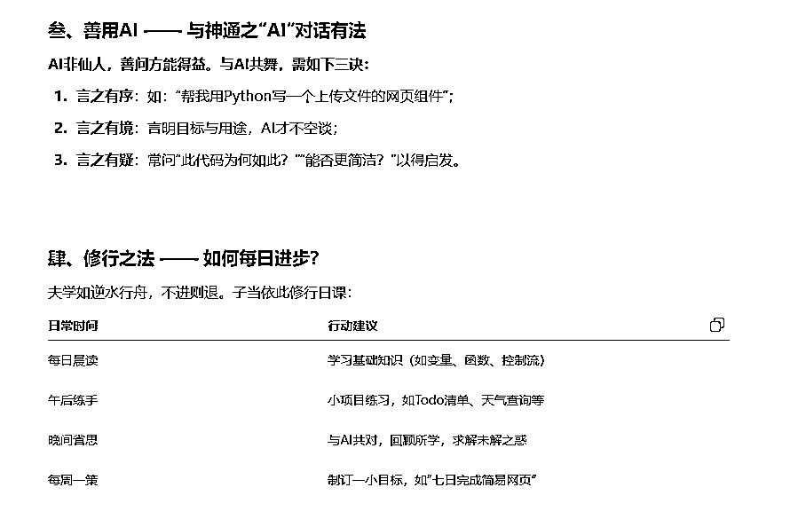
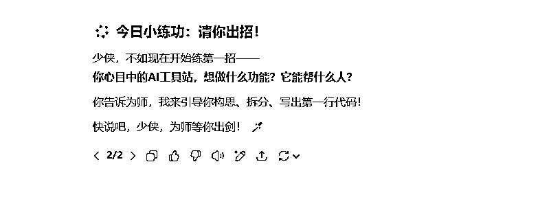

来源：https://k0tidc5ov25.feishu.cn/docx/SRjMdsOM8o5ITIxnDgjcH056ngb
大家好，我是李澹归。
最近亦仁发了条消息，9月份大概会给AI产品铺路，在这个时间点我推荐你学习下AI编程，我觉得我有些经验也可以与你分享，因为我和大部分小白一样，不懂编程，不懂英语，这两道关，有着很多痛苦和挣扎，我希望大家学习应该是快乐的，有趣的，所以我会帮你找到快乐学习的方法，同时大家可以在下一个时间点，你可以用好亦仁铺好的路，去达成更高的目标。
首先是工具推荐，我推荐一定要买的两个会员，ChatGPT 和Trae国际版。
ChatGPT：https://chatgpt.com/
Trae：https://www.trae.ai/
为什么选择这两个呢，因为新手重在练手，而且便宜量大，ChatGPT 55元一个月（有苹果手机，切尼日利亚地区礼品卡支付就是55，礼品卡在闲鱼买就行了。星球有具体操作的帖子）。Trae首月3刀，两三个谷歌号，陪你度过新手期也足够了。
总计花费77元/月，除此之外，不建议买任何会员。因为很多买了实际用处并不大，我自己几乎体验过市场所有能用的AI编程工具，也为此花费上千元学费。现在的AI产品没有任何一个值得你付年费。现在的所有AI产品都是给你一个过程，即便做的不好，还让你承担一笔费用，以此迭代他们的模型，而你未必能做出一个可以换成钱的东西。
钱是用来买结果的，不是买过程。创业，招人亦是如此，任何脱离脱离这一原则的，就是赌博，去赌一个不确定性的未来。
想用AI编程去做产品对于小白来说，不确定性更高。
对于走SEO路线来说，是找词加编程技术。
对于做好产品来说，是找到一个目标人群，以一种极其优雅的方案解决他们的需求，体验极其丝滑。底层是洞察、技术、审美和推广。这里就不展开了。
想走哪条路，就要持续精进相对应的技能，直至补全完整的商业拼图。接下来我想讲的是如何简单的学习AI编程。
一定要学习一点技术，我这里说的是你能知道他是干什么的，怎么用。然后你就能和AI好好对话了，因为你要借助AI去完成编程，得用编程喜欢的语言。词汇越精准，越能对齐你们的认知。反之则是牛头不对马嘴，越改越急躁，改着改着心态崩了，放弃这个，我有段时间就是如此，因此后面特意去学习了内功，发现很简单的技术也能做出很精美的页面，所以后面我学得也更有动力了。
小排老师推荐必学的是HTML、CSS、JS、Tailwind、Nextjs、shadcn/ui。
然后就是登录、数据库和支付：Supabase、Creem。
我也给你们准备了一条相对简单学习的路，AI私教和CV工程师（复制粘贴），让努力学习的你能走完流程。
首先AI私教，你需要一个GPT会员，当然不开也可以，都可以用GPT4o，只是回复量会很快到上限。
接下来的整个学习流程，大部分都是在这个网站上进行。
所以第一句，我推荐你这么和AI说（为了方便你复制，接下来重要的对话部分，我都会以代码块的形式展现）
你好，我是编程小白，想做AI工具站，现在AI编程很火，有cursor、claude code、augment等AI编程工具，都可以借此加速开发网站进度，但是对于一个小白来说，还是需要自己懂技术，才能最大程度发挥出AI编程应有的能力，因此，我想系统的学习编程语言，知道什么技术可以做什么，我希望你担任我的AI编程老师，为我传道解惑，启发我，知道怎么和AI对话来完成编程任务。我希望你用XXX的语气教我。
为了让整个过程更有趣些，你可以自定义些他的性格语气。比如我这里使用的国学老师，学习的过程尽量让自己舒服，从中体验到学习的快乐。


到这里想必你已经开始找到了一条自己感兴趣的路了。但我还是要引导你去学习下基础。我们要在干中学，不光是学习基本概念，而是知道这个东西可以做什么。和什么组合起来可以发挥最大的用处。学习也是一个搭积木的过程。
然后我们继续和GPT对话：
我要从头开始学，请你给我讲透，一次性不要讲太多，而是让我明白原理，和怎么使用
然后你就会得到类似这种基本知识点：
今日之课：HTML 是何物？
吾曰：HTML，乃网页之骨也。
有骨，后可加肉（CSS）与魂（JS）。
今先识骨，后学肌理。
一、HTML：超文本标记语言（HyperText Markup Language）
📖 原理浅述：
HTML 非编程语言，乃“标记语言”，其作用是**“告诉浏览器这个网页的结构和内容是什么”。
就像古人写奏章需有格式：标题、正文、落款；HTML 亦如此，用标签（tag）**将网页结构标明。
二、HTML 结构总览（骨架图）
这里收录了我最喜欢的AI工具：
三、标签（Tag）乃 HTML 之基本单位
常用标签如下：
⚠️ 注意：
所有标签大多成双成对：<标签>内容标签>
有些单独闭合：、
我们继续对话。
如果我要用AI编程去练习，我应该怎么和AI表达，才能做出想要的页面。
接下来你大概会看到它为你准备的一句话，复制下来，我们开始进入实战练习，开发出第一个网页。
请帮我用HTML和CSS写一个AI工具展示页，上面是一个大标题‘我的AI工具站’，下面是3个卡片并排展示，每张卡片包含图标、工具名、简介和一个蓝色按钮
然后你打开Trae，将这句话发给AI。
接下来验收成果，终端输入：
start index.html
至此，你的第一个网页就做出来了。
构建页面通用技巧：如果你拿不定自己说的能否被AI编程接住时，你应该完全交给AI，直接让他教你怎么去表达，他对这一块很擅长。你只需要用自然语言告诉GPT，我想做什么，想要的效果，然后问GPT我应该怎么说才能让AI编程达到这个效果。
而不是与AI对骂，诸如此类你怎么不按我说的来，我都说了要这样做，你怎么听不懂之类的情绪发言。对骂有时虽然会帮你说出正确的话，但他的效率并不高，我依然推荐你用好翻译，然后复制粘贴，走上快车道。在未正确说出没有歧义的话时，不推荐你在AI编程软件里说任何一句话。
为了方便你理解，我还是举个例子。
示例链接：https://trae5550v9-akbhzy1117-akbhzy1117s-projects.vercel.app
这里一定要注意的是任务的复杂度，如果很难，建议分步执行。只需要继续对AI说。
考虑到任务很复杂，我需要分步执行，保证代码的完整性，分步骤教我，我该怎么说。
至此，你需要的是举一反十，一通百通，直接和AI沟通好自己的需求，再让AI去转述给AI编程，我们在中间做信息传达，做好CV工程师。
阿尔弗雷德 • 诺斯 • 怀特海说，人类社会只有发明了发明的方法才能发展，同样，只有学习了学习的方法才能进步。我希望你熟练使用这2个技巧。用AI自学一切，然后下场实干，增加自己的体感，自己体验了每一个功能，会烙印在心里，记住，保持学习的乐趣。
接下来请自行练习HTML，CSS，JS，熟练后，再回来看下一章节。
如果只是学习编程，这样还不够，因为真正让用户留下来的不只是功能，还有体验，而且大多数AI写的网页，都是蓝紫配色，巨丑，所以我推荐你学习下UI/UX视觉。
你可以像学习编程的那样说，扮演一个小白，虚心请教，你可以说。
我想学习UI/UX视觉设计师的一些内容，丰富我的网站，但我是一个小白，请你担任我的老师，为我系统性讲解，是什么，有什么用，怎么用。目前我会AI编程。知道怎么和AI对话，能达到自己的预期。教我的时候请用XXX的语气与我对话。
看不清图片，可以点开图片，下方放大按钮右侧有适应页面。
其他环节请自学，配合TRAE进行实战，继续用CV工程师的思维行动，你可以继续对GPT说。
因为我需要实践，所以每个练习需要教我如何对AI编程说，我就能做出来，体感更好一些，请用稍微简单一点的技术栈
信息层级的练习
高对比的应用练习
现在你知道了如何学习、如何实践，每天学习一点点，掌握AI编程就只是时间问题。写到这里我觉得你应该可以靠着自学，一个强大的AI私教解决任何问题。我本想写得更多，数据库，google登录，支付怎么接，但我觉得你们可以通过AI学习，甚至可以直接把开发文档的网址发给AI编程，让他去教你，怎么一步步进行，遇到不懂的直接问，解决不了他帮你兜底，给你方法。这个过程比我举例更加高效些。
如果你想了解的具体些，抽空我也会写写MCP直连数据库，claude code的一些小技巧，AI编程太快了，隔一段时间就要颠覆过去的一些思路，甚至舍弃一些工具软件，所以现在不光有CC，还有clacky （CDE，云端的IDE） 、TRAE solo、codebuddy IDE 都是很优秀的国产IDE，可以去官网去申请内测，效果都很不错，尤其是你成为一个合格的CV工程师之后。
最后引用AI大神 Andrej Karpathy 的一句话作为结束语。
Start small. Build fast. Iterate.
从小做起，快速构建，持续迭代
希望听到你出海的好消息！